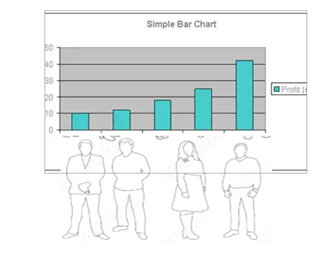
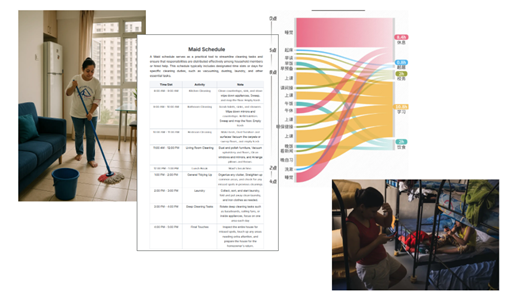
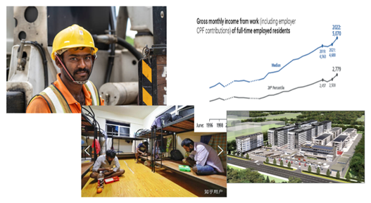
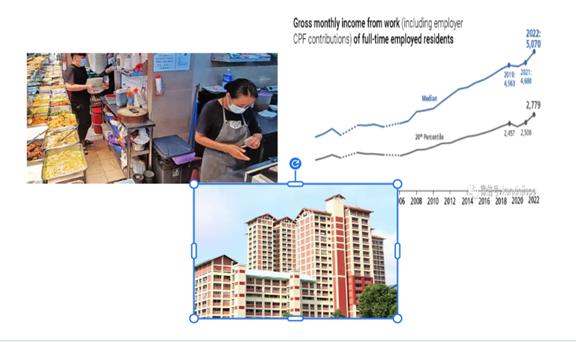
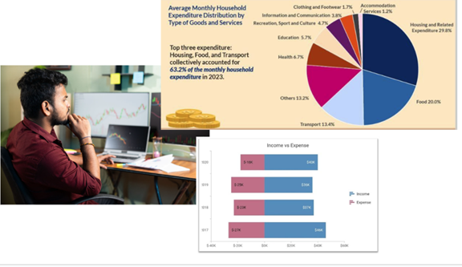
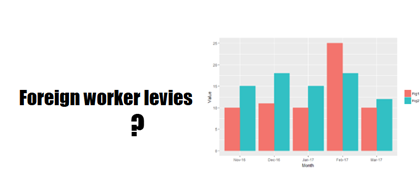
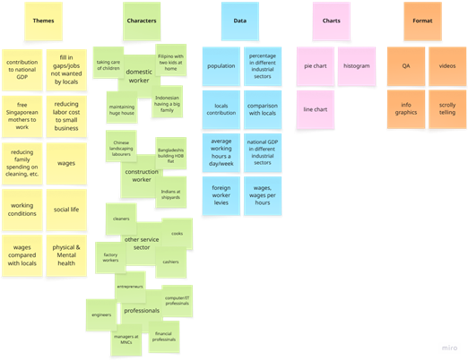
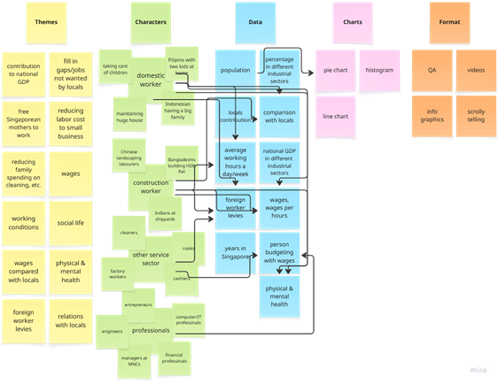

Storyboard
Foreign Workers in Singapore
Overview
This piece outlines a plan for a scrolling webpage story about migrant workers in Singapore, showing how much they contribute and how rough their lives are—from low pay to long hours—using the individual experiences of four different workers. The whole point is to make the audience, especially Singaporeans, feel more empathy by matching personal stories with simple charts and graphs. Just to be clear, this project is about figuring out the best way to tell this story with data, not about crunching a bunch of numbers or creating fancy new analyses.
The Storyboard
The story begins with a pie chart of the Singapore population illustrating the percentage of migrant workers in Singapore, which amounts to about 25% of the overall population of 6.11 million. The percentage is substantial and exerts undeniably significant impacts on almost every aspects of the Singapore society.
When counting only the workforce in Singapore, the migrant workers reach about 37.5% of the total working population, that is, about 4 in 10 money earners are migrant workers.
Following the pie chart, the background of the stories is given and certain terms (e.g., the different work passes) are explained and illustrated with a simple bar chart. For example, Employment Pass holders and S Pass holders are considered as professionals as they need to meet the requirement of certain minimum wages (i.e., S$5,600, S$3,300 respectively). For the other workers, no minimum wages are specified by the Singapore government, and in the bar chart, their average wages are shown (i.e., S$ 500 - S$ 800). There are huge gaps between the professionals and the other workers.
By scrolling, each human figure enlarges and tell his or her short story.

Jasmine is Pilipino and has two kids in home country. She mainly helps her masters to maintain the cleanness of the two-story detached house with a reasonable sized garden. She also cooks and washes for the whole family of four and accompany her masters’ the little son to and from the school. Her work timetable is shown and then transformed to a Sankey diagram. She earns S$ 600 a month but works for more than 16 hours a day, but she needs to work to support her kids. She also knows that her masters have to pay domestic worker levies to the Singapore government every month.

Habibul is a construction worker from Bangladesh. His works 10-12 hours a day and stays in a dormitory for 12 people. His earnings increase, especially after Covid-19, but he still only makes less than S$ 600 a monthly. He is looking forward to moving to the new dormitory, but this will increase his commute time on bus by an hour a day for the round trip. He is aware that his employer pay foreign worker levies every year, but he does not know the exact amount.

Wang from China works as a cook helper in a Chinese resultant, and his wages exceed S$2,000. He stays in a HDB flat, a Singapore government subsidized flat, sharing a room with other two fellow workers. He finds Singapore extremely expensive and saves on everything so that he can send money back to China to support his peasant parents who have no pension. He spends nearly S$400 on housing alone.

Anil is a computer engineer from India working in a bank. He earns decently and his family stays with him as dependents. But recently years he finds livings in Singapore more and more expensive, and his annual saving is decreasing. He wishes to stay in Singapore as residents but his applications for permanent residents always fail. His employer does not need to pay foreign worker levies, but has to meet other requirements, such as fulfilling procedures to hire locals first.

The story ends with a question about the foreign worker levies (monthly), which is the amount of money paid to the government by the employer in order to employ a migrant worker. The levies apply to the migrant workers except professional. Some levies are higher (S$ 700 – 900 monthly) than the wages of some migrant worker. A bar chart compares the workers’ average wages to the amount of levies paid by the Singapore employers to the government. Is this justified?
Explanation About The Storyboard
Touched by the story about the exploitation of domestic helpers in Hong Kong from the South China Morning Post, I recalled my days back in Singapore after my first child was born about 15 years ago: the chaos in my house, the hassle in hiring a domestic helper, the reliefs experienced with my helper, Nyura, a young mother from Myanmar in her late 20s, and petty quarrels with Nyura. Nyura did not work long for me because I could not get used to exercise dominance over her 24 hours a day. Fortunately, she was able to obtained an ordinary work permit in Singapore with a higher wage. In my nearly-twenty-year experience in Singapore, I encountered many migrant workers: domestic helpers in my friends’ homes, mostly from Philippine and Indonesia, construction workers, mainly from China, Bangladesh and India, factory workers and other workers in various service sectors working as cleaners, cooks, cashiers, as well as professionals in finance and technology sectors.
I chose the theme on migrant workers in Singapore because most of the migrant works are kind of being exploited in Singapore. They have to work excessive hours; their living conditions are inferior; they are highly regulated; and they are paid much lower than the locals doing comparable jobs. They have different backgrounds, education, religions and skills, but most of them are kind, hard-working and optimistic.
The audience of my story includes anyone who is willing to know more about migrant workers’ lives in Singapore. My story may have some resemblances to some migrant workers in other countries in today’s globalized world and those who want to making a surplus broad or who consider Singapore as a destination for work may find my story informative and interesting.
I have a deep desire to share my story to my fellow Singaporeans who may or may not get in touch with these migrant workers. Singapore is a highly efficient and competitive place. Some Singaporeans view migrant workers as threats to their own jobs. Many understand the need to have migrant workers to boost the Singapore economy, but they are usually negligent about the fact these migrant workers are not machines in the assembly lines. They are usually paid less than their actual worthiness, and they should be respected and treated equally regardless of their earnings, origins and skills as long as they work hard. I wish for more understanding and healthy competitions among Singaporeans and migrant workers.
The audience of my story includes anyone who is willing to know more about migrant workers’ lives in Singapore. My story may have some resemblances to some migrant workers in other countries in today’s globalized world and those who want to making a surplus broad or who consider Singapore as a destination for work may find my story informative and interesting.
I have a deep desire to share my story to my fellow Singaporeans who may or may not get in touch with these migrant workers. Singapore is a highly efficient and competitive place. Some Singaporeans view migrant workers as threats to their own jobs. Many understand the need to have migrant workers to boost the Singapore economy, but they are usually negligent about the fact these migrant workers are not machines in the assembly lines. They are usually paid less than their actual worthiness, and they should be respected and treated equally regardless of their earnings, origins and skills as long as they work hard. I wish for more understanding and healthy competitions among Singaporeans and migrant workers.
Brainstorming And Preparation
From my perspective, these migrant workers constituting a substantive portion of the Singapore population have contributed greatly to the unprecedented fast development of Singapore, and their work should be recognized and appreciated.
During ideation, I first identified the various aspects of contributions made by the migrant workers to the Singapore society. Naturally, the characters of the story are being the various migrant workers; and they can be viewed as individuals, or categorized by different types of work passes they hold, or they may be viewed as a whole group. The relevant datasets may include the percentages of migrant workers in the overall population, national GDP according to industrial sectors, percentages of migrant workers in different industrial sectors, their average wages and the average wages of the local workers.
At the very beginning, my focus was gauging their contribution to Singapore, for example, primarily in terms of national GDP (Gross Domestic Product), and their rewards, for example, primarily in terms of wages. However, after a preliminary searching using the Singapore government databases (e.g., Ministry of Manpower, Department of Statics Singapore, Economic Development Board), I found that the data released to the public is highly selectively and the statistics such as the Monthly Basic and Gross Wages are mainly focused on resident employees, which refer to Singapore citizens and Singapore permanent residents only according to Singapore Ministry of Manpower. Thus, it seems that I am not able to tell the story of contribution against rewards as planned.
However, I do not want to give up the topic. With the available data, I would like to focus on the individual stories for each category of the migrant workers and reveal information specific to each category.
More notes were added to the Ideation Map with links.
Personal Notes
This was my first assignment, a formal non-technical narrative-type writeup, after more than 15 years. I did not use any AI tools at all, from idea generation and preliminary data search through to the writing. However, I nearly failed this assignment.
Because there were a lot of grammar mistakes in my work and it was completed at the last minute, I did not talk to the teaching assistant or my professor. Sadly, no feedback was given.